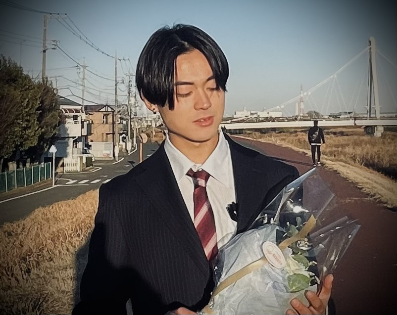

対象は、英検2級・準1級を目指す高校生。
英検2級を目指す方
初めての挑戦でも、再受験でも。現在の学習状況や苦手な技能を整理し、受験に向けて取り組む順番をメンターと考えます。
英検準1級を目指す方
2級の次の目標へ進みたい方、学習方法を見直したい方へ。語彙・読解・リスニング・英作文などの課題を整理し、個別の計画で取り組みます。
現在の対象級は2級・準1級です。準2級向けのプログラムは提供していません。
EIKEN COACHING / HIGH SCHOOL STUDENTS
一人で勉強していても、何を優先すべきか分からない。計画を立てても続かない。PRAVEQ MENTORは、目標から今日の行動までを一緒に考える、個別の英語コーチングです。
学習計画・進捗確認・英作文と要約の添削を通じて、英検合格を目指す高校生を支えます。
無料相談を予約 ↗サービス内容や料金についてのご質問は、お問い合わせからも受け付けています。
初めての挑戦でも、再受験でも。現在の学習状況や苦手な技能を整理し、受験に向けて取り組む順番をメンターと考えます。
2級の次の目標へ進みたい方、学習方法を見直したい方へ。語彙・読解・リスニング・英作文などの課題を整理し、個別の計画で取り組みます。
現在の対象級は2級・準1級です。準2級向けのプログラムは提供していません。
目標級、受験予定、学校や部活動の予定を踏まえて学習計画を作成。1回50分の個別オンラインコーチングを月4回行います。
契約期間中は原則1日1回、公式LINEで学習の進捗を報告・確認。学習を続けるための行動を一緒に整理します。
英作文と要約の添削は、契約期間中の提出回数に上限を設けていません。書いた答案へのフィードバックを、次の練習につなげます。
質問には原則として受信から24時間以内に返信します。具体的な支援範囲や受講日程は、契約前にご確認いただけます。

高校時代、初めて受けた英検2級は不合格。それでも学習を続け、青山学院大学文学部英米文学科へ現役合格し、大学1年の冬に海外経験なしで英検1級を取得しました。
自分が経験した挑戦を、次の高校生へ。問題の解き方に加え、学習に向かう姿勢と継続を大切にしています。
Shuのストーリーを読む →STANDARD PROGRAM
月額49,800円（税込）
3か月契約・月4回・全12回。1回50分の個別オンラインコーチングに、学習計画、進捗確認、質問対応、英作文・要約の添削を含みます。
月額49,800円を3回お支払いいただき、契約総額は149,400円（税込）です。入会金・システム利用料はありません。通信費、端末費、英検受験料、任意の市販教材費は別途ご負担ください。
契約は3か月で終了し、自動更新されません。受講日時は空き状況を確認して契約時に確定します。
支払い・振替・解約などの詳しい条件は、利用規約と特定商取引法に基づく表記をご確認ください。
オンラインで受講できます。インターネット接続と、面談・学習に使用する端末をご用意ください。
PRAVEQは、個別の学習計画、定期面談、日々の進捗確認を組み合わせるコーチングです。教材の学習に加え、何をいつ取り組むか、どう続けるかをメンターと考えます。
はい。サービス内容や契約条件について、保護者の方からのお問い合わせも受け付けています。
合格を目指した学習支援を提供しますが、合格や進学などの結果を保証するものではありません。